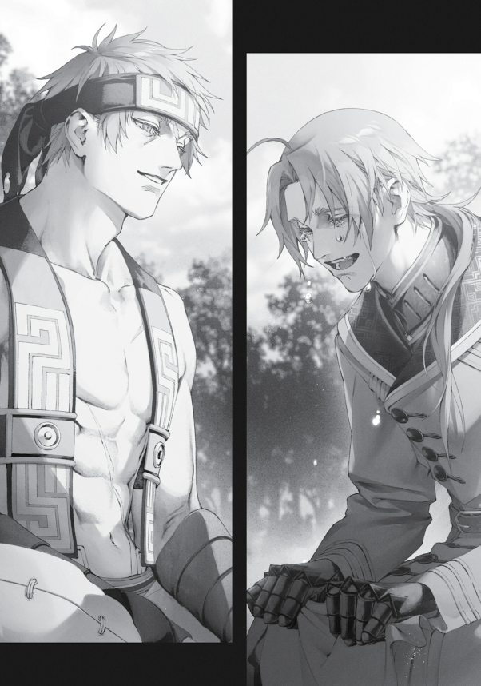

Bu sözleri söyledikten sonra düğün hazırlıkları için işe koyuldum. Norn zaten bu işe dünden razıydı, geriye sadece Ruijerd’in durumu kalıyordu. Yaşı düşünüldüğünde, küçük kız kardeşimle evlenme fırsatını kaçırmaması gerekirdi. Ayrıca bu evlilik, Superd halkı için de avantajlı olurdu. Geçmişten beri evlilikler genellikle ittifakları güçlendirmek için yapılırdı. Norn ve Ruijerd’in evlenmesi, Superd’lerin Ejderha Tanrısı’na karşı düşmanca bir tavır takınmayacağını garantilerdi. Bizim tarafımızda ise, Superd halkını yüzüstü bırakmayacağımız anlamına gelirdi. Tam bir kazan-kazan durumu.
Ama bu kadarı yeterli miydi? Ve Norn’u mutlu eder miydi? Ya Ruijerd, evlenmek zorunda kaldığı için bu ilişkiye girerse? Norn, Ruijerd’in onu sevmediğini fark ettiğinde gözyaşlarını içine akıtabilir miydi?
Şu an Ruijerd, Biheiril Krallığı ile yürütülen müzakerelerden sorumluydu. Bu da demek oluyordu ki, Norn büyü şehri Sharia’da değil, Superd köyünde yaşayacaktı. Neyse ki orada olanlardan sonra köy halkı onun yüzünü ve adını biliyordu; muhtemelen onu sıcak bir şekilde karşılayacaklardı. Ama Norn, bambaşka bir türden insanlarla ve Sharia’dan tamamen farklı bir kültürle çevrili yaşamayı kaldırabilir miydi? En kötü ihtimalle, Norn yakın bir kasabada tek başına yaşamaya bile başlayabilirdi.
Bu durum beni endişelendiriyordu. Gerçekten endişelendiriyordu. Eşlerime danıştığımda,
Roxy “Norn bu. Eminim üstesinden gelir,” dedi.
Eris ise, “Ruijerd bu. İkisi de iyi olur,” dedi.
Sylphie ise, “Sen এই işi fazla kafaya takıyorsun,” diyerek kestirip attı.
Onlara göre her şey yolunda olacaktı, ama yine de içim rahat etmiyordu. Norn’un mutsuz olmasına dayanamazdım. Eğer ağlarsa, Paul’un rüyalarımda bana lanet okuyan bakışlarıyla yüzleşmek zorunda kalırdım, Zenith ise yatağımın yanında oturup beni tokatlardı. Onların hatırası için de, Norn’un mutlu olmasını sağlamak zorundaydım. Elimden geleni yapacaktım, ama son kararı yine Norn verecekti.
Ruijerd’e ise güvenebilirdim, tabii. Onun Norn’u gerçekten sevip sevmemesine bakmaksızın, eşine karşı tüm sorumluluklarını yerine getireceğini biliyordum. Norn’un ağlamasına asla izin vermezdi. Ama yine de emin olmak istiyordum. Belki ikisini yakınlaştıracak bir olay düzenleyebilirdim. Ruijerd’in Norn’a karşı hislerini yönlendirmeyi başarırsam, ikisinin mutluluğunu garantileyebilirdim.
“Tamam,” dedim kendi kendime.
İşte bu yüzden kendimi Superd köyünde, Biheiril Krallığı’nda buldum. Sadece birkaç ay önce köy ağır bir inşaat altındaydı, ama şimdi yeniden bir köye benziyordu. Yüksek bir palisadeyle çevriliydi, içinde evler ve henüz ekilmemiş sebze tarlaları vardı. Superd savaşçıları beni görünce başlarını eğip sıcak bir şekilde karşıladılar. Onlara selam vermek için hafifçe başımı eğdim ve hızla Ruijerd’in evine doğru yola koyuldum. Tabii ki ev yepyeniydi.
Ruijerd’in evi büyüktü. Muhtemelen köyde artık epey önemli bir figür olduğu için böyleydi. Evet, bu ev ikisi ve birkaç çocuk için gayet yeterliydi.
“Ruijerd,” diye seslendim, biraz tereddütle, “evde misin?”
“Rudeus?” diye cevap verdi. Muhtemelen yeni yemek yemişti—ocağın önünde bağdaş kurmuş, gözleri kapalı bir şekilde meditasyon yapıyormuş gibi oturuyordu.
Hiçbir şey demeden karşısına oturdum. Diz çökerek yerimi aldım. Bunun üzerine Ruijerd gözlerini açtı ve bana meraklı bir ifadeyle baktı.
“Ne oldu?” diye sordu.
Elimi kaldırıp, “Bir saniye,” dedim. “Ne söyleyeceğimi toparlamaya çalışıyorum.”
“Peki,” diye cevapladı.
Sonra bir süre sessizlik oldu. Ocağın titrek alevlerine bakarak, sanki bir saat geçmiş gibi hissettim. Garip ama, ne söylemem gerektiğini önceden hiç düşünmemiştim. Soracağım şeyi biliyordum: Norn hakkında ne hissediyordu? Onu seviyor muydu? Nefret mi ediyordu? Onunla evlenebileceğini hayal edebiliyor muydu?
Ama işin püf noktası, bunu nasıl söyleyeceğimdi.
“Ruijerd, Norn’la evlenmek ister misin?” gibi bir şey mi demeliydim? Hayır, hayır, bunu geçelim. Evlenmek ve hissetmek iki farklı şeydi. Bunu unutmamam gerekiyordu.
Sessizliğimi korudum ama Ruijerd de konuşmaya çalışmadı. Sanki sonsuz vaktimiz varmış gibi, sabırla benim konuşmamı bekledi. O gün ne yapması gerektiğini bilmiyordum ama kesin yoğun programı vardı. Norn’a da böyle davranacağından emindim. Belki Norn bu durumdan sıkılırdı. Belki bir noktada patlayıp ona, “Bir şey söylesene!” derdi.
Ama yok, sanırım Norn’un Ruijerd’e âşık olmasının sebebi tam da bu yanıydı. Yanında rahatça sessiz kalabileceğin biri bulmak nadir bir şeydi. Gerçi şu an bu durum beni biraz huzursuz etmişti.
“Geçen gün Norn bana çay yaptı, aslında oldukça iyiydi,” dedim, biraz tepkisini ölçmek için.
“Öyle mi? Norn çay yapmış ha,” diye karşılık verdi Ruijerd.
Hah, bir kıpırdanma! Belki de gerçekten Norn’la ilgileniyordu. İlk engeli aşmış mıydım acaba?
Ama dur bir dakika. Bir saat sessiz kaldıktan sonra biri bir şey söylerse, ne dediği fark etmeksizin dikkatini çekerdi zaten.
Sakin ol, Rudeus. Muhabbet akışında ilerlemeli.
“Meğer iş yerinde hep çay yapıyormuş, orada geliştirmiş yeteneğini,” dedim.
“Anladım… Köye geldiğinde yaptığı çayı içmiştim bir kere. Çok iyiydi,” diye yanıtladı Ruijerd, o anıyı hatırlayıp hafifçe gülümsedi.
Demek daha önce Norn’un çayını içmişti. Belki de bir kez daha içmek istiyordu. Belki de her gün onun için çay yapmasını isteyebileceğini düşünüyordu…
Kahretsin, soruyu nasıl soracağım? Birkaç seçeneğim olsa keşke. Orsted benimle konuşurken de böyle mi hissediyor acaba? Bunu nasıl yapacağım ki?!
“Çay yapmanın yanı sıra, yemek yapma konusunda da fena değil.”
Kararsızlığımı sürdürürken muhabbet kendi kendine akmaya devam ediyordu.
Bir saniye… Ne dedin sen? Ev yapımı yemek mi?
“Norn’un yemeklerini mi denedin?” diye sordum.
“Evet, denedim.”
Norn’un yemeklerini mi? Daha ben tatmamışken?!
“Yapma ya…”
Acaba ne yapmıştı? Etli patates haşlaması mı? Köri mi? Belki de dana stroganoff? Ben de istiyordum! Norn’un evde yaptığı yemekleri tatmak istiyordum!
Ama dur, konu bu değil.
Ruijerd’in dediğine göre, yemekleri “fena değilmiş.” Bu da demek ki tamamen bir felaket değildi. Kalbine midesiyle ulaşamayabilir, ama mutfakta tamamen beceriksiz olmadığı da belliydi. Demek düğünden sonra Ruijerd’in açlıktan bir deri bir kemik kalma riski yoktu.
Tam bu düşüncelerle boğuşurken, Ruijerd birden araya girdi:
“Norn’la ilgili bir şey mi oldu?”
Ne kadar dikkatlisin, Ruijerd!
Tamam, kabul. Buraya bu kadar ciddi bir suratla gelip aniden Norn’dan bahsedince, sorması gayet mantıklıydı.
“Hayır, şey… Öyle pek bir şey yok aslında. Sadece, bilirsin işte, laflıyoruz,” dedim, kıvranarak.
Ne yazık ki hâlâ ona doğrudan soracak cesareti kendimde bulamıyordum.
Norn’u seviyor musun? Ona âşık mısın? Şu an onu kollarına alıp öpebilir misin?
Ya sorduğumda, “Hayır, hiç hoşlanmıyorum,” derse? “Evlenemem, evlensem bile onu sevemem,” derse?
Bu ihtimali düşündükçe içim içimi yiyordu. Böyle bir cevap benim için büyük bir darbe olurdu. Hatta belki burada bir kavga çıkarırdım: “Norn’um sana layık değil mi, ne demek istiyorsun?!”
“Norn artık bir yetişkin. İşe bile girdi. Ama bazı yönlerden hâlâ çocuk gibi… Mesela erkeklere hiç ilgi duyuyor gibi görünmüyor. Bazen bir koca bulup bulamayacağını merak ediyorum,” dedim ve Ruijerd’e baktım. Fazla mı açık ettim acaba? Ruijerd’in yüzüne şüpheci bir ifade yerleşmişti.
Bir süre sonra, “İnsanların geleneği değil midir, evlilik partnerinin seçimini ailenin reisi yapar? Norn’un eşini seçmek senin sorumluluğun değil mi?” diye sordu.
“Yok, yok, yok! Biz soylu değiliz, biliyorsun? Norn’un kendi kocasını seçmesine izin vermek daha iyi olabilir diye düşünüyorum… şey… hani…”
Bir yandan Ruijerd’in yüzüne bakıyordum, ama ifadesi hiç değişmemişti. Aslında hayır, yüzündeki şüpheye bir de sertlik eklenmişti. Acaba sorumluluktan kaçtığımı mı düşünüyordu?
“Hah, endişelenme!” dedim hızla. “Eğer Norn bir işe yaramazla geri dönerse, onu kapı dışarı ederim. Ona derim ki, ‘Norn’u istiyorsan önce beni geçmek zorundasın!’ Norn’u öyle herhangi birine bırakacak değilim!”
Hızla bir bahane uydurdum. Ruijerd, Norn’u ona teklif etmeden hemen önce beni sorumsuz biri olarak görürse, felaket olurdu. Tam olarak nasıl kötü bir durum oluşacağını kestiremiyordum ama kesinlikle bir şekilde kötüye giderdi.
“Yani diyorsun ki, Norn’u eş olarak almak isteyen herkes önce seni yenmek zorunda mı?” diye sordu Ruijerd.
“Hayır! Yani ille de güçlü olmak zorunda değil! Ama! Yani şey… Nasıl söylesem… Cesaret! Evet, aynen, cesaretini bana göstermesini isterim.”
Bende korkak biriydim ama kaçmazdım. Norn’la evlenmek isteyen biri, kazanamayacağını bilse bile ayağa kalkıp savaşma cesaretine sahip olmalıydı. İşte aradığım buydu.
“Demek öyle,” dedi Ruijerd.
“Aynen.”
Elbette, Ruijerd’in bu konuda endişelenmesine gerek yoktu. Ona bunu gizlice bir bakışla anlatmaya çalıştım, ama yüz ifadesi taş gibi değişmeden duruyordu—o sert bakışı bir milim bile oynamamıştı…
Belki de Norn’a gerçekten ilgi duymuyordu. Bu gayet doğal olabilirdi. Ona göre, Norn bir çocuktu. Küçüklüğünden beri tanıyordu ve hep zayıf bir çocuk olarak görmüştü. Ruijerd, bir çocuğa karşı arzu duyacak biri değildi. Öyle bir adam olmadığını biliyordum.
“Ruijerd, şey… Açık açık soracağım,” dedim sonunda.
“Pekâlâ.”
Sonuçta sormam gerekiyordu. Ne olursa olsun. Norn için kötü bir cevap alma ihtimali olsa bile. Sadece yüz ifadesine bakarak bir sonuca varamazdım. Artık gerçeği öğrenmek için cesaretimi toplama vakti gelmişti.
“Norn hakkında ne hissediyorsun?” diye sordum.
Ruijerd sessiz kaldı. Bana gözlerini dikmiş, tek kelime etmeden taş gibi sert bir ifadeyle bakıyordu. Yüzündeki şüphe tamamen kaybolmuştu.
Hımm. Bu garipti. Normalde Ruijerd’in hemen cevap vermesini beklerdim. Norn’u bir çocuk mu yoksa bir yetişkin mi olarak görüyordu acaba?
Kendimi hazırladım.
“Norn’a karşı… bir şeyler hissediyor musun?” diye pat diye sordum. Belki hata yapmıştım. Belki bu soruyu Norn’un kendisinin sorması daha iyi olurdu.
“Ah,” diye mırıldandı Ruijerd. Ardından, kararını vermiş gibi ayağa kalktı. Duvara dayalı duran mızrağını aldı.
Sonunda konuştu:
“Rudeus,” dedi. “Dışarı çık.”
Anlamadım. Ona şaşkın bir şekilde baktım.
Benim tereddüdüm üzerine, Ruijerd daha güçlü bir tonla tekrarladı:
“Çık dışarı.”
“Tamamdır.”
Sesindeki yoğunluk tartışmaya yer bırakmıyordu. Hiç itiraz etmeden dediğini yaptım.
Superd köyünden ayrıldıktan sonra, Yeryüzü Ejderhası Yarığı’nın ormanına doğru on beş dakika kadar yürüdük. Ağaçların arasında ilerlerken, orman birdenbire bir açıklığa dönüştü. İşte orada, Ruijerd’le karşı karşıya geldik.
Ruijerd, tüm yol boyunca ciddi ve kararlı bir ifadeyle yürümüştü. Belki onu bir şekilde kızdırmıştım. Görünüşe göre, Norn hakkında hislerini sormak büyük bir hataydı. Sanırım, Norn’u politik bir hamle olarak önerdiğimi düşünmüştü. Ruijerd bu. Böyle bir durumda kesin şöyle derdi: “Ağabeyi olarak, Norn’u korumak senin görevin. Onu bir yabancının gözünde değer kazanmak için kullanamazsın.” Onun güvenilirliğinden şüphem yoktu.
“Uzun zaman önce fark ettin demek.” dedi birden.
Hiç beklemediğim bir şeydi. Boş boş ona baktım. Ne fark etmişim? Fark etmiş olmam gereken şey neydi? Ben mi fark etmişim? Şu anda tamamen kaybolmuş ve kafası karışık olan ben mi? Şu an ne olduğunu algılamanın yanına bile yaklaşamayan şu halim mi?
“Neyi fark ettim?” diye sordum.
“Daha fazla konuşmana gerek yok. Kendini hazırla!”
“İtiraz etmeye vakit kalmaması” tam olarak böyle bir şeydi. Tabii ki Öngörü Gözü’m açık değildi, ve açık olmadan Ruijerd’e ayak uydurmam mümkün değildi.
“Yovv!” diye bağırdım. Ruijerd anında üzerime atıldı ve beni yere serdi. Yine de, on yıl kadar önceki hâlime kıyasla artık biraz daha iyi bir seviyedeydim. Günlük antrenmanlarımın faydasını gördüm; tepki verebilmiştim, ama sadece zar zor.
Ruijerd’in mızrağı sağdan hızla üzerime gelirken, Büyülü Zırh Versiyon 2’nin eldiveniyle savurdum. Hemen ardından alçak bir tekme salladı, tek bacağımı kaldırarak engelledim ve tek ayağım üzerinde dengede kalmaya çalıştım. Ancak o sırada mızrağını çevirip destek ayağımı hedef aldı.
“Ee, nasıl?” diye sordu Ruijerd, mızrağının ucunu boğazıma dayarken. İfadesi hâlâ taş gibi soğuktu, bana yukarıdan bakıyordu.
“Teslim oluyorum. Kazandın,” dedim. Onun ne istediğine dair hiçbir fikrim yoktu. Söyleyebileceğim başka bir şey yoktu. Ruijerd’in beni boğazımdan delmeyeceğine emindim, ama bu değişmez bir gerçeği değiştirmezdi: kaybetmiştim.
“Bu yeterli miydi?” diye sordu.
Ne hakkında konuştuğunu anlamıyordum. Neyin yeterli olup olmadığını soruyordu?
“Bence, yeterli olmayan asıl kişi benim” diye mırıldandım.
“Yani… Yeterli miydi?” diye tekrar sordu.
Ne için yeterli olmalıydı? Beni yere sermesi mi? Daha fazla konuşursam yalnızca kendimi daha da küçük düşürürdüm.
“Sanırım öyle” dedim. Bunun üzerine Ruijerd mızrağını geri çekti. Yere oturdum. Ruijerd yukarıdan bakarken ne kadar zavallı göründüğümü ben bile fark etmiştim.
Sonra Ruijerd, kafamı iyice karıştıran bir şey söyledi:
“Anlaşmamız gereği, kız kardeşini talep ediyorum.”
Kız kardeşimi talep etmek mi? Evlenmekten mi bahsediyor? Yani Norn’dan mı bahsediyoruz? Ben böyle bir söz mü verdim? Dur bir dakika, biz ne konuşuyorduk ki az önce?
Konu bir şekilde benim elimden kaymış gitmişti.
“Senin de şüphelendiğin gibi,” dedi Ruijerd.
Ben neyin şüphesindeydim ki?
“Norn ile evleneceğim,” dedi.
“Ev…lilik mi…” Kelimenin anlamını hatırlamak için beynimi zorladım. Evet, evlilik. Birlikte yaşama durumu.
“Ha?” Ruijerd, Norn’a mı âşık olmuştu?
Dur bir dakika, hemen olayları kafanda büyütme! Senin böyle şeyleri yanlış anlama huyun var.
“Yani, sen… Norn hakkında…”
Uzun bir sessizlik oldu. Sonra Ruijerd, “Onu seviyorum,” dedi.
Acaba şaka mı yapıyordu? Belki de planı beni o kadar sevindirmekti ki, anında “Evet, hemen evlenin!” diyecektim. Ama sonra, Norn’u gelin kimonosu içinde karşısına getirir getirmez Ruijerd, “Şaka yaptım!” diye patlayacaktı. Bu, benim için duygusal bir yıkım olurdu. Norn bile yatağa düşebilirdi. Bu kesinlikle O Adam’ın, yani İnsan Tanrısı’nın işi olmalıydı.
Kahretsin, Ruijerd İnsan Tanrısı’nın bir uşağı mı olmuştu?
“Şaka mı bu? Yoksa bir tür dalga mı geçiyorsun?” diye sordum.
“Şaka değil,” dedi Ruijerd, biraz alınıp. Zaten o asla şaka yapmazdı, bu da bir istisna değildi.
“Peki, ne zamandan beri böyle hissediyorsun?” diye sordum.
“Birkaç ay önce, Biheiril Krallığı’ndaki savaş sırasında. O zaman beni kendini hiç düşünmeden iyileştirdi.”
Doğru, o dönemde ayrılmaz ikili gibiydiler. Hatta neredeyse aile gibi görünüyorlardı. Ama bu, gerçekten de karşılıklı bir şey miydi? Yoksa ben mi yanılmıştım? Belki de Norn sadece kendi hislerinin peşinden gitmişti ve Ruijerd’in haberi bile olmamıştı.
“Tabii ki hislerime göre hareket etmedim,” dedi Ruijerd.
Eğer Norn benim kardeşim olmasaydı, hislerini belli eder miydi? Muhtemelen evet. Orsted’in anlattığı döngülerde öyle oluyordu; Norn bir kadın, bir gelin ve sonunda bir anne oluyordu.
“Sen bunu fark etmiştin, anladım. Sanırım bu yüzden buraya gelip böyle bir anda konuya girdin,” dedi Ruijerd.
Sessiz kaldım.
Şaka olmalıydı. Tek bildiğim, Norn’un Ruijerd’e âşık olduğuydu—bu hislerin karşılıklı olduğunu hiç bilmiyordum. Zekâ konusunda bir tuğlayla yarışabilirdim, ama bu kadarı bile bana ağırdı.
“Tekrar ediyorum: Norn’u eşim olarak almak istiyorum,” dedi Ruijerd. Boynuma dayadığı mızrağı kaldırdı. “Bunu göstermek için sana kararlılığımı kanıtladım.”
Demek mesele buydu? Bir düello… bana kararlılığını göstermek içinmiş. Ama nasıl desem? Fazla basitti. Her şey fazla kolay ilerliyordu. Bu bir tuzak mıydı? Kim kimi tuzağa düşürmeye çalışıyordu? Hiçbir fikrim yok. Ne dönüyor burada?
Yerden kalkmadan, oturduğum yerden Ruijerd’e bakarak konuştum. “…Peki ya önceki eşin ve oğlun? Onlar için bir sorun olmaz mı?” Hiçbir şey anlamadığım için sorularımı sormaya devam ettim.
“Geçmişe bağlı değilim.”
Bir keresinde bana “doğru kişiyi bulamadığını” söylediği aklıma geldi.
Ben hâlâ yerimden kalkmamışken, Ruijerd mızrağını yere sapladı ve yanıma bağdaş kurarak oturdu. Ben de diz çökerek oturdum. Şimdi göz seviyemiz eşitlenmişti.
“Başka bir deyişle…” dedi Ruijerd, sonra yüzünü ekşitip aşağı baktı ve dudaklarını sıktı.
Ben birdenbire çıkıp gelip onun duygularını ifşa edince, anlaşılan o ki bir karar almıştı. Karşı atağa geçip kararlılığını göstermek için beni buraya kadar getirmişti. Ama iş konuşmaya geldiğinde Ruijerd pek yetenekli değildi. Ne söylemesi gerektiğini ya da nasıl ifade edeceğini hâlâ kafasında oturtmaya çalışıyor olmalıydı.
Belki bu konuda aceleci davranmıştım. Orsted’in söylediklerinden dolayı ikisini hemen bir araya getirmem gerektiğini düşünmüştüm. Daha dolaylı bir yaklaşım mı geliştirseydim acaba? Mesela, Norn kaçırılmış olsa ve Ruijerd’den onu kurtarmasını istesem? Yok yok, bu planı hemen unut. Bu sadece Norn’un kalbini kazanmasına yol açardı. Belki de Ruijerd’i bir şekilde tuzağa düşürmeliydim? Ama bu da işe yaramazdı; Norn beni sonsuza dek nefretle anardı.
Ben kafamda bu tür saçma fikirler çevirirken, Ruijerd konuşmaya başladı: “Bir gün bir insanla evleneceğimi tahmin ediyordum.”
“Ne demek istiyorsun?”
“Senin sayende, Superdler yeniden kabul görüyor. Biheiril Krallığı’nın halkı ve ogre kabilesi bizi sıcak karşıladı. Tıpkı ogrelerde olduğu gibi, bir gün bir Superd ile kraliyet ailesi ya da soylular arasında bir kan bağı kurulacak. Böyle bir durumda, ilk kişinin ben olmam gerektiği önerildi.”
“Ha.” Bunun konuşulmuş olması mantıklıydı. Ruijerd’in köydeki konumu, köy liderine danışmanlık yapan biri gibiydi. Eski, saygı duyulan bir savaş kahramanıydı. Köyün idolü gibiydi… Tam olarak ifade edemesemde daha çok koruyucu bir melek misaliydi. Biheiril Krallığı’ndan bir prensesle ya da bir soyluyla evlenebilirdi. Bu, Superdlerin krallığı koruyacağının bir garantisi olurdu.
“Ama seçim bana bırakılmış olsaydı… Rudeus, ben senin ailenin bir parçası olmak isterdim.”
İçimde bir sıcaklık hissettim. Biheiril Krallığı ile dostluk, Superdler için çok daha faydalı olurdu. Bundan hiç şüphe yok. Ama Ruijerd, benim ailemi seçmişti. Beni seçmişti!
Dur bir dakika, beni değil! Şükürler olsun. Kız-deus’a dönüşüyordum neredeyse. (Kız-deus, Rudeus’un kız hali)
Tam o anda bir şey aklıma geldi.
“Yani, Norn’la mutlu olacaksın, değil mi?”
“Ne demek istiyorsun?” diye sordu Ruijerd, kaşlarını hafifçe çatarak.
“Norn… nasıl desem, biraz bencil biri. Bazen düşünmeden pat diye bir şey söyler ve söylediği şeyin sonuçlarını pek düşünmez. Diyelim ki karı koca olarak bir tartışma yaşadınız, geçmişinle ilgili takıntılı bir şey söyleyebilir.”
Ruijerd sessiz kaldı. Bu sözlerin ağzımdan çıkacağını hiç beklememiştim ve söylediğim an pişman olmuştum. Buraya Norn’u desteklemek için gelmiştim, ama onun eksik yönlerinden bahsediyordum. Oysa güçlü yanlarını öne çıkarmalıydım. Ama işte, gerçekler ortadaydı.
“Ev işlerini öğrenmiş durumda, ama bunu ana görevi yaparsa ne kadar iyi olur, emin değilim. Öğrenir, ama öğrendiğini uygulama konusunda o kadar başarılı değil. Çoğu zaman bir şeyi ilk denemesinde eline yüzüne bulaştırır. Şaria’da bu kolaydır, ama Superd köyünde yeni şeyler öğrenmesi gerekecek. Bu durum belki de sana yük olabilir.”
Bir de şöyle bir şey var: evlenebilecek başka kadınlar da var bizim ailede. Mesela Aisha. Aisha, dürüst olmam gerekirse, Norn’dan daha yetenekli. Ev işlerini yapabilir, çocuk bakabilir. Norn’un yapabildiği her şeyi Aisha da yapabilir, hatta belki daha iyisini. O yüzden Ruijerd’in Norn’la gerçekten mutlu olup olmayacağını merak ediyorum.
Aslında Norn’u desteklemek istiyordum, ama Ruijerd’i de seviyordum. İkisinin de mutlu olmasını istiyordum. Bu yüzden hiçbirinin memnuniyetsizlik yaşamayacağından emin olmam gerekiyordu.
“Ama bu, onun elinden gelenin en iyisini yapmasının bir sonucu değil mi?” diye karşılık verdi Ruijerd. “Norn’u tanıyorum. Onun güçlü ve zayıf yönlerini biliyorum.”
Cevap veremedim. Ruijerd ısrarla devam etti:
“Sen de tanıyorsun, değil mi?”
“Elbette.”
Norn’un çok fazla iyi yanı vardı. Son zamanlarda nasıl biri olduğuyla ilgili detayları bilmiyor olabilirdim, ama insanlara değer vermeyi öğrenmişti. İnsanlar artık onu Aisha ile karşılaştırmayı bırakmıştı ve o da bu yüzden gereksiz yere alttan almayı bırakmıştı. Eskisi kadar histerik değildi ve Aisha’yla kavga etmiyordu. Norn aynı zamanda düşünceli biriydi. Evde bunu pek hissettirmese de okulda, arkadaşları ve genç öğrenciler ona hayranlık duyuyordu. On beşinci yaş günü partisinde pek çok arkadaşı vardı. Hatta şu an bile, genç öğrenciler bazen evimize gelip dersleri ya da öğrenci konseyi hakkında Norn’dan tavsiye istiyordu.
Norn, her şeyde elinden gelenin en iyisini yapıyordu. Hiçbir zaman en iyisi olmayabilirdi ama yeterince iyiydi. Pek çok şey onun için doğal gelmiyordu, bu yüzden “ideal eş” gibi görünmeyebilirdi. Ama neden Aisha ile kıyaslayalım ki? Norn çalışkan biriydi ve sürekli olarak ilerleme kaydediyordu. Hayatı boyunca da böyle devam edecekti çünkü o böyle bir insandı. O iyi bir çocuktu—gurur duyabileceğim bir küçük kardeşti.
Ruijerd onun ne kadar çabaladığını biliyordu. Ona, Norn’un güçlü ya da zayıf yönlerini anlatmama gerek yoktu. Onu olduğu gibi sevmişti.
“Her zaman Norn’u koruyacağına söz veriyor musun?” diye sordum sonunda.
“Elbette,” dedi Ruijerd kararlı bir sesle. Tabii ki söz verirdi. Ölüm onları ayırana dek onu koruyacaktı.
“Norn evlendikten sonra zorlanabilir. Farklı bir ırktan insanlarla çevrili olacak ve ailesinden uzakta olacak. Ona destek olabilecek misin?”
“Evet,” diye söz verdi Ruijerd. Hayatı boyunca destek olacaktı.
“Hiçbir sebep yokken surat astığında ve kırıcı şeyler söylediğinde bile onu sevmeye devam edeceğine söz veriyor musun?”
“Evet.”
Bahse girerim böyle zamanlarda onu sarıp sarmalardı.
“Norn Millis inancına bağlı biri… Sadık kalacağına söz veriyor musun?”
“Evet.”
Bu zaten barizdi. Ruijerd’i hiçbir kadının cazibesi etkileyemezdi.
“Norn benden bile daha fazla sulu gözlü biri. Bu seni rahatsız etmez mi?”
“Etmez. Ne senin ne de onun ağlaması için bir sebep bırakmam.”
Geç kaldın. Büyük gözyaşları yanaklarımdan aşağı süzülüyordu. Ruijerd fazla konuşmuyordu, ama gözleri her şeyi anlatıyordu. “Bunların hiçbirini sorun etmem. Hepsini anlıyorum.”
Yer değiştirme olayından sonra Orta Kıta boyunca yaptığımız yolculuğun hatıraları zihnimde canlandı. Ruijerd yanımda olduğu sürece güvende hissediyordum. Ne tür canavarlar üzerimize gelirse gelsin, Ruijerd bizi hep korudu.
Kabul etmek gerekirse, canavarlarla savaşmadığı zamanlarda bazı zayıf yönleri vardı, ama kimde yok ki? Bu tür durumlarda Norn’un ona destek olması yeterliydi. Şimdiki haliyle, bunu yapabileceğinden emindim. Eğer yapamayacak biri olsaydı, Ruijerd asla onunla evlenmek istediğini söylemezdi zaten.
Omuzlarımdaki gerilim, yerini büyük bir rahatlamaya bıraktı.
“Kardeşime iyi bak,” dedim. Sonunda başımı eğip ona saygıyla selam verdim.
